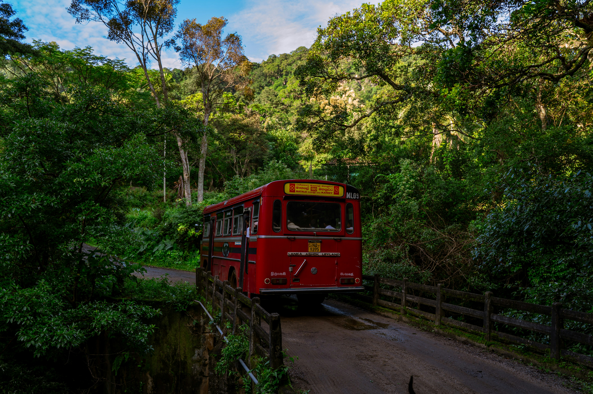
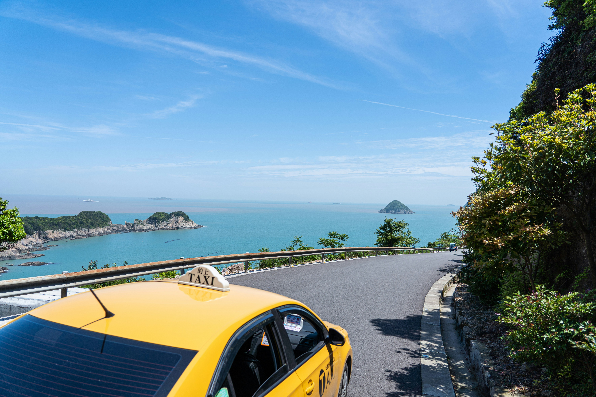
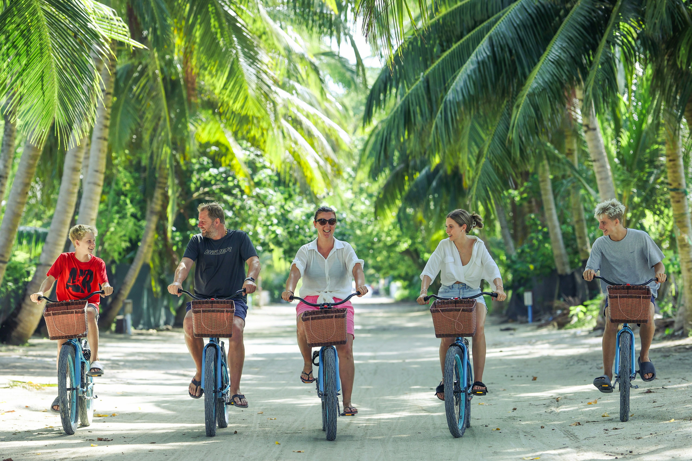
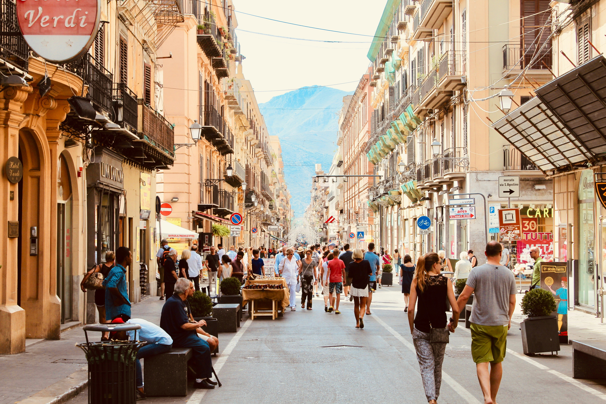

Getting to Taniti
Air Travel
Travel by air to our very own Taniti International Airport (TIA).
There are two outgoing flights per day, at 10:00 and 16:00 island
time.
Taniti is happy to announce that we are expanding our airport!
Within the next few years, we will be adding a new terminal to
accomodate for larger jets.
Transportation on the Island

Buses
We have 27 active busses that traverse our islands, offering an
affordable way to travel and explore.
Buses run from 06:00 to 00:00 every day. You can catch them at
our conviently located bus stops around the islands.

Taxis / Cars
Taxis and car rental options are available for those who prefer
to ride solo. Reserve your rental car at our airport and seaport
kiosks.
Our taxi services all operate 24 hours a day. You can order a
taxi any time at (999) 080-8888.

Bikes
Bikes are an affordable and fun way to explore the island! We
have single and tandem bikes available for visitors to use.
Bikes can be rented from authorized merchants at most beachfront
properties.

Walking
Taniti is one of the most walkable islands in the Pacific. With
many walking paths being created along the beaches and within
our rainforests, you will always be able to see beautiful sites
and take in the nature.
Walking maps are available at all airport and seaport kiosks.